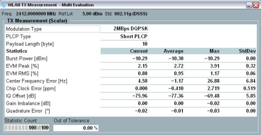

View TX Measurement (Scalar) for DSSS
The view contains a table of statistical results.

WLAN multi-evaluation: Results (DSSS signal)
The table provides the following results in the upper part:
- "Modulation Type" and "PLCP Type" (i.e. burst type): see "Physical Layer"
- "Payload Length": number of bytes in the payload of the measured burst
In the lower part, the table provides results with statistical evaluation:
- "Burst Power": RMS value over the entire burst, including preamble and payload
- Error vector magnitude (EVM) peak and RMS values
- Center frequency error
- Chip clock error
- I/Q origin offset
- "Gain Imbalance": absolute value of (1 + I/Q imbalance)
- "Quadrature Error": angular component of (1 + I/Q imbalance)
For query of the results via remote control, see:
For additional information, refer to "Common View Elements".